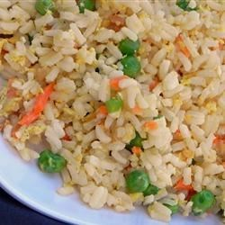

World's Healthiest Foods
40-Minute Fried Rice

A simple fried rice recipe.
15 Min - Prep time
30 Min - Cook time
8 Servings
Ingredients:
- 2 cups enriched white rice
- 4 cups water
- 2/3 cup chopped baby carrots
- 1/2 cup frozen green peas
- 2 tablespoons vegetable oil
- 2 eggs
- soy sauce to taste
- sesame oil, to taste
Directions:
- In a saucepan, combine rice and water. Bring to a boil. Reduce heat, cover, and simmer for 20 minutes.
- In a small saucepan, boil carrots in water about 3 to 5 minutes. Drop peas into boiling water, and drain.
- Heat wok over high heat. Pour in oil, then stir in carrots and peas; cook about 30 seconds. Crack in eggs, stirring quickly to scramble eggs with vegetables. Stir in cooked rice. Shake in soy sauce, and toss rice to coat. Drizzle with sesame oil, and toss again.